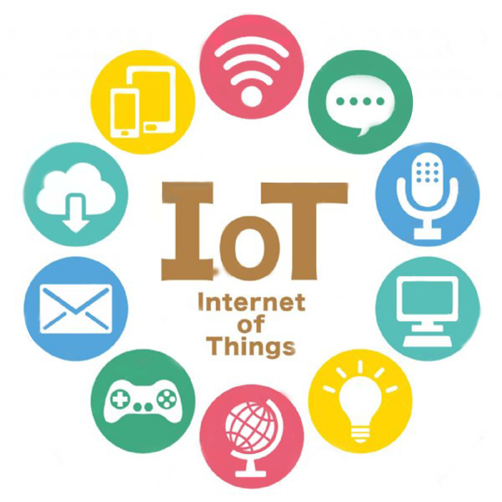

IOT介紹

什麼是物聯網?
物聯網（Internet of things, IoT）為一種計算裝置、機械、數位機器相互關聯的系統，能將真實世界數位化。
簡單來說，就是讓物品上網，藉由網路可以進行讀取或傳遞資訊。
其實物聯網已經存在很久了，最初的實作是在1980年代，一台能連上網的可樂販賣機，且能查看販賣機內的可樂數量，
而這樣的技術隨著科技演變，發展出更小，更強的處理器，可應用在運輸物流、工業製造、健康醫療、個人或社會領域等。(取自馬森科技)
TOP
`
物聯網怎麼運作?
完整的物聯網系統結合了三個元素，包含感測器、網際網路與數據處理。
透過感測器收集數據，並以wifi、藍芽或是乙太網路連接至網路，藉此將數據傳輸至雲端，
進入雲端後會利用軟體進行處理，最終將資訊傳遞給用戶，甚至能結合人工智慧（AI）或機器學習，深入分析收集的數據。
現今也有許多設備是能互相串聯數據，並能根據彼此的數據判斷出更佳的行動。(取自馬森科技)
TOP
`
物聯網有什麼優點?
- 幫助工作自動化，減少人工干預，改善效率。
- 設備的成本和設置的成本較低。
- 自動收集數據，節省時間和金錢。
TOP
物聯網有什麼缺點?
- 物聯網設備不容易管理，也不易發現設備損壞。
- 物聯網具備多種協定及標準，安全性強化不易。
- 物聯網沒有統一的國際標準，因此不同製造商的設備很難互通。
`
TOP
物聯網有什麼應用?
- 智慧製造、工業4.0：工業用的物聯網稱為工業物聯網（Industrial Internet of things, IIoT），
透過網路將感測器、儀表、設備和電腦串聯成系統，並從中蒐集資料及分析，藉此提升生產力與效率，
達到高程度的自動化。
- 智慧城市：物聯網在城市中能透過科技及數據的方式解決問題，藉此提高生活品質，
以台中為例，為改善空汙的問題台中於空汙熱點設置500台「空氣監視器」，透過數據抓出污染的源頭，
交通方面也有停車App的出現，幫助大眾快速找到車位
- 智慧家庭：智慧家庭是以住宅為主，透過技術將建築、網路、家電與設備自動化結合在一起，
能保障家中安全、提升生活品質、降低生活成本、居家照護以及沉浸式娛樂，依照不同家庭的生活型態，
像是針對老人或小孩進行規劃，創造安全、舒適與環保的居住環境。(取自馬森科技)
TOP
`